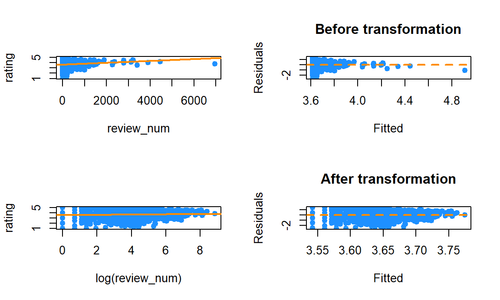
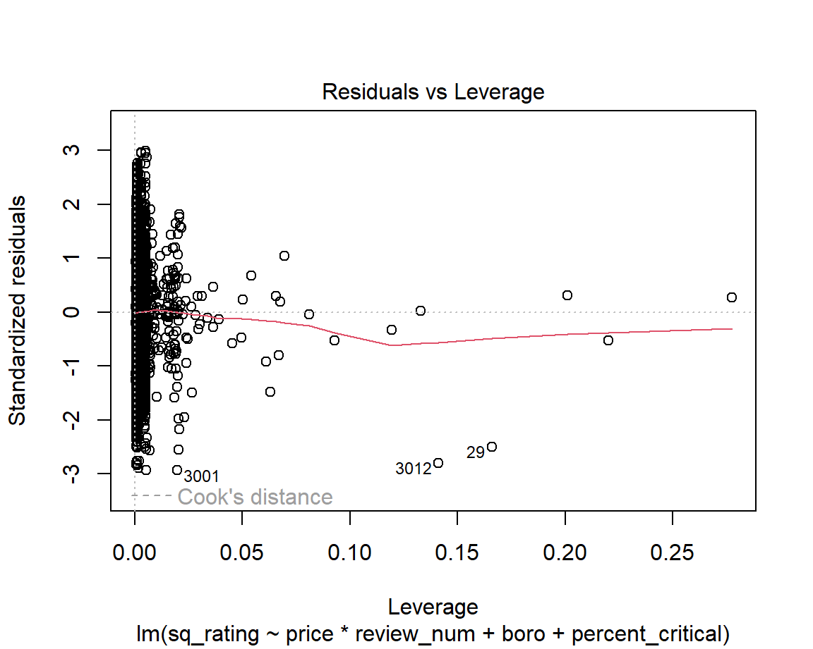

Statistical Analysis
Jiayi Shi
2022-12-09
Dataset Overview
In this first step, we wrangle the data to be analyzable and provide a brief overview of our dataset and our variables of interest.
library(readr)
dt = read_csv("data/inspection_sub_all_date.csv")
df = read_csv("data/inspection_sub_latest_date.csv") %>%
distinct(camis, .keep_all = TRUE) %>%
mutate(price = fct_recode(price, "1" = "$", "2" = "$$", "3" = "$$$", "4" = "$$$$"),
boro = fct_reorder(boro, rating),
grade = fct_relevel(grade, "A"))Now, we provide a table summary of all variables involved.
df %>%
select(boro, grade, price) %>%
mutate(boro = fct_infreq(boro)) %>%
tbl_summary(
by = boro,
missing_text = "(Missing)",
statistic = list(
all_categorical() ~ "{n} ({p}%)"
)) %>%
bold_labels() %>%
italicize_levels() | Characteristic | Manhattan, N = 2,4221 | Brooklyn, N = 1,6711 | Queens, N = 1,3021 | Bronx, N = 4241 | Staten Island, N = 2341 |
|---|---|---|---|---|---|
| grade | |||||
| A | 1,280 (71%) | 913 (74%) | 666 (74%) | 194 (71%) | 148 (77%) |
| B | 41 (2.3%) | 39 (3.1%) | 29 (3.2%) | 6 (2.2%) | 4 (2.1%) |
| C | 16 (0.9%) | 8 (0.6%) | 12 (1.3%) | 8 (2.9%) | 0 (0%) |
| N | 225 (13%) | 126 (10%) | 109 (12%) | 37 (14%) | 27 (14%) |
| Z | 233 (13%) | 156 (13%) | 90 (9.9%) | 27 (9.9%) | 12 (6.3%) |
| (Missing) | 627 | 429 | 396 | 152 | 43 |
| price | |||||
| 1 | 653 (28%) | 668 (41%) | 542 (44%) | 209 (53%) | 92 (41%) |
| 2 | 1,420 (60%) | 856 (53%) | 655 (53%) | 171 (44%) | 123 (55%) |
| 3 | 240 (10%) | 76 (4.7%) | 34 (2.7%) | 9 (2.3%) | 8 (3.6%) |
| 4 | 49 (2.1%) | 10 (0.6%) | 9 (0.7%) | 2 (0.5%) | 2 (0.9%) |
| (Missing) | 60 | 61 | 62 | 33 | 9 |
| 1 n (%) | |||||
df %>%
select(score,rating, review_num) %>%
tbl_summary(
missing_text = "(Missing)",
statistic = list(
all_continuous() ~ "{mean} ({sd})"
)) %>%
bold_labels() %>%
italicize_levels() | Characteristic | N = 6,0531 |
|---|---|
| score | 17 (13) |
| (Missing) | 130 |
| rating | 3.62 (0.79) |
| review_num | 209 (459) |
| 1 Mean (SD) | |
We observe that,
Manhattan has the most restaurants (40% of all restaurants in the city), followed by Brooklyn (28%), Queens (22%), Bronx (6.6%), and Staten Island (3.4%).
The “score” variable has 100 missing values with mean 18 and standard deviation 14.
The “grade” variable has 1,399 missing values with most of the restaurants receiving As (70% of all restaurants).
Each restaurant has average rating 3.78 with standard deviation 0.68.
Each restaurant has on average 232 reviews with standard deviation 485.
The most common price range for restaurants is between $11-$30 (60%), followed by under $10 (31%).
Exploratory Data Analysis
We first perform chi-square tests and proportion test to get a sense of the data that we are dealing with. Specifically, we ask the following questions:
is there a relationship between boroughs and restaurant’s inspection grades?
Is there a relationship between price and restaurant’s inspection grades?
More specifically, is price range of the restaurant a factor in the inspection grades that a particular restaurant receives?
Chi-square Test
Inspection Grades and Boroughs
We try to determine whether there is a relationship between boroughs and restaurants’ inspection grades. Our hypothesis is that there is no difference in the number of restaurants across the five grades across the five boroughs in NYC. We will perform the chi-square test to verify our assumption.
\(H0\): the expected number of restaurants in each grades are the same across all boroughs.
\(H1\): the expected number of restaurants in each grades are not same across all boroughs.
grade_boro =
df %>%
filter(grade %in% c("A", "B", "C")) %>%
count(boro, grade) %>%
pivot_wider(
names_from = "grade",
values_from = "n") %>%
replace(is.na(.), 0)
# Display result.
grade_boro %>%
knitr::kable(caption = "Results Table",
col.names = c("Borough", "A", "B", "C"))| Borough | A | B | C |
|---|---|---|---|
| Bronx | 194 | 6 | 8 |
| Staten Island | 148 | 4 | 0 |
| Queens | 666 | 29 | 12 |
| Brooklyn | 913 | 39 | 8 |
| Manhattan | 1280 | 41 | 16 |
# Perform chi-square test
grade_boro = grade_boro %>%
data.matrix() %>%
subset(select = -c(boro))
chisq.test(grade_boro)##
## Pearson's Chi-squared test
##
## data: grade_boro
## X-squared = 17.93, df = 8, p-value = 0.02176Interpretation: The result of chi-square shows that p-value is less than 0.05, so we reject the null hypothesis at 95% significant level and conclude that the inspection grades of restaurants are significantly different by boroughs.
Price and Inspection Grade
Next, we focus on whether inspection grade received is different among different groups of price range.
\(H0\): There is no difference in the inspection grade received among the four different groups of price range.
\(H1\): There is a difference in the inspecion grade received among the four different groups of price range.
price_grade = df %>%
select(boro, score, grade, rating, review_num, price) %>%
drop_na(price, grade) %>%
filter(grade %in% c("A", "B", "C")) %>%
group_by(price, grade) %>%
summarise(n = n()) %>%
pivot_wider(
names_from = grade,
values_from = n
) %>%
replace(is.na(.), 0) %>%
mutate(price = fct_recode(price, "<10"="1", "11-30"="2", "31-60"="3", ">60"="4"))
price_grade %>%
knitr::kable(caption = "Results Table",
col.names = c("Price($)", "A", "B", "C"))| Price($) | A | B | C |
|---|---|---|---|
| <10 | 1228 | 54 | 19 |
| 11-30 | 1623 | 57 | 23 |
| 31-60 | 194 | 3 | 1 |
| >60 | 44 | 0 | 0 |
price_grade = price_grade %>%
data.matrix() %>%
subset(select = -c(price))
# Perform test
chisq.test(price_grade)##
## Pearson's Chi-squared test
##
## data: price_grade
## X-squared = 7.5714, df = 6, p-value = 0.2712Interpretation: The result of chi-square shows that p-value is more than 0.05, so we fail to reject the null hypothesis at 95% significant level and conclude that the inspection grades of restaurants do not differ by price scales of restaurants.
Proportion Test
Now, we want to see whether receiving grade A is equally common among restaurants of all four price scales. To do this, we will conduct a proportion test.
\(H0\): Receiving A is equally common among restaurants fo all four price scales.
\(H1\): Receiving A is not equally common among restaurants for all four price scales.
total = df %>%
group_by(price) %>%
summarise(total = n())
n_a = df %>%
count(price, grade) %>%
filter(grade == "A")
join = left_join(total, n_a) %>% drop_na()
prop.test(join$n, join$total)##
## 4-sample test for equality of proportions without continuity correction
##
## data: join$n out of join$total
## X-squared = 23.36, df = 3, p-value = 3.397e-05
## alternative hypothesis: two.sided
## sample estimates:
## prop 1 prop 2 prop 3 prop 4
## 0.5674677 0.5032558 0.5286104 0.6111111#join = join %>%
# mutate(prop = n/total) %>%
# select(price, prop)Since p-value 0.07 > 0.05, at confidence level of 95%, we fail to reject the null hypothesis, and conclude that we do not have enough evidence to claim that the proportion of restaurants receiving A is different among four datasets.
Regression model
Now, we perform regression analysis from our data treating “rating” as the response variable of interest.
Data Exploration and Variable Transformation
The dataset used for regression model contains four categorical variables and three continuous variables. From the plot below, we can see that score and review number is left skewed and rating is right skewed.
top_cuisine = df %>%
count(cuisine_description) %>%
arrange(-n) %>%
top_n(4) %>%
pull(cuisine_description)
reg_df = df %>%
select(rating, boro, cuisine_description, score, grade, review_num, price) %>%
filter(cuisine_description %in% top_cuisine) %>%
filter(grade %in% c("A", "B", "C"))
library("ggplot2")
library("GGally")
reg_df %>%
ggpairs()+
theme_bw()
Data Transformation
We first test the normality assumption of the response variable, “rating”. We see from the below histogram that it is negatively skewed. Though sample size is large, to avoid confounding, we need to square-transform the rating variable. Furthermore, after checking the dependent variable review_num, we’ve found the data to be positively skewed. We remedy the problem by log-transforming it.
# Histogram for response variable rating
df %>%
select(boro, cuisine_description, score, grade, rating, review_num, price) %>%
ggplot(aes(x = rating))+
geom_histogram(aes(y = ..density..), bins = 30, color = "black", fill = "grey") +
geom_density()
# QQ plot
qqnorm(df$rating)
Comparing the residual vs. fitted value plot of rating and review_num before and after transformation of review_num, we see now that the transformed data does not significantly violate the assumptions of linearity, equal error variance, and no outlier assumptions.
par(mfrow = c(2, 2))
plot(rating ~ review_num, data = reg_df, col = "dodgerblue", pch = 20, cex = 1.5)
review = lm(rating ~ review_num, data = reg_df)
abline(review, col = "darkorange", lwd = 2)
plot(fitted(review), resid(review), col = "dodgerblue",
pch = 20, cex = 1.5, xlab = "Fitted", ylab = "Residuals")
abline(h = 0, lty = 2, col = "darkorange", lwd = 2)
title(main = "Before transformation")
plot(rating ~ log(review_num), data = reg_df, col = "dodgerblue", pch = 20, cex = 1.5)
review = lm(rating ~ log(review_num), data = reg_df)
abline(review, col = "darkorange", lwd = 2)
plot(fitted(review), resid(review), col = "dodgerblue",
pch = 20, cex = 1.5, xlab = "Fitted", ylab = "Residuals")
abline(h = 0, lty = 2, col = "darkorange", lwd = 2)
title(main = "After transformation")
par(mfrow = c(2, 2))
plot(rating ~ score, data = reg_df, col = "dodgerblue", pch = 20, cex = 1.5)
rating_score = lm(rating ~ score, data = reg_df)
abline(rating_score, col = "darkorange", lwd = 2)
plot(fitted(rating_score), resid(rating_score), col = "dodgerblue",
pch = 20, cex = 1.5, xlab = "Fitted", ylab = "Residuals")
abline(h = 0, lty = 2, col = "darkorange", lwd = 2)
title(main = "Before transformation")
plot(rating ~ log(score+0.1), data = reg_df, col = "dodgerblue", pch = 20, cex = 1.5)
rating_score = lm(rating ~ log(score+0.1), data = reg_df)
abline(rating_score, col = "darkorange", lwd = 2)
plot(fitted(rating_score), resid(rating_score), col = "dodgerblue",
pch = 20, cex = 1.5, xlab = "Fitted", ylab = "Residuals")
abline(h = 0, lty = 2, col = "darkorange", lwd = 2)
title(main = "After transformation")
# Log transform review_num, square transform rating
reg_df = reg_df %>%
select(rating, everything()) %>%
mutate(review_num = log(review_num),
score = log(score+0.1),
rating = rating^2)Prognosis of Significant Predictors
In this section, we speculate the potentially statistically significant predictors for response variable “rating”. We use boxplots to visualize the effects of categorical variables like cuisine type, inspection grade, and price scales; and use scatterplots for continuous distributions like score and review number.
Categorical Independent Variables
Firstly, we visualize the effects of categorical variables cuisine type, inspection grade, and price scales on rating. In particular, we have found that rating has some association with cuisine type, inspection grade and price scale.
reg_df %>%
ggplot(aes(y = rating, x = cuisine_description, color = cuisine_description))+
geom_boxplot()
reg_df %>%
ggplot(aes(y = rating, x= grade, color = grade))+
geom_boxplot()
reg_df %>%
drop_na(price) %>%
mutate(price = fct_recode(price, "<10"="1", "11-30"="2", "31-60"="3", ">60"="4")) %>%
ggplot(aes(y = rating, x = price, color = price))+
geom_boxplot()
reg_df %>%
mutate(boro = fct_reorder(boro, rating)) %>%
ggplot(aes(y = rating, x = boro, color = boro))+
geom_boxplot()
As shown in the boxplots above, when considering the most populated cuisine types, restaurants that serve coffee/tea tend to receive the highest ratings. Furthermore, though restaurants that receive A or B for grade inspection have similar median rating, restaurants receiving C for grade inspection have a slightly lower median rating compared to those that received A or B. Finally, there seems to be an association between price range and rating as higher priced restaurants tend to receive better ratings.
Continuous Independent Variables
Now, we consider the effects of continuous independent variables.
Interaction
There is interaction between score and cuisine type.
reg_df %>%
ggplot(aes(x = score, y = rating, color = cuisine_description))+
geom_point()+
geom_smooth(method="lm", se=F, aes(group = cuisine_description, color = cuisine_description))
The cross lines indicate that borough is a confounder of the relationship between score and rating.
reg_df %>%
ggplot(aes(x = score, y = rating, color = boro))+
geom_point()+
geom_smooth(method="lm", se=F, aes(group = boro, color = boro))
MLR Molde selection
model = lm(rating ~ cuisine_description*score + boro + review_num + price, data = reg_df)
summary(model)##
## Call:
## lm(formula = rating ~ cuisine_description * score + boro + review_num +
## price, data = reg_df)
##
## Residuals:
## Min 1Q Median 3Q Max
## -14.8813 -3.5527 0.2135 3.5398 12.4241
##
## Coefficients:
## Estimate Std. Error t value Pr(>|t|)
## (Intercept) 11.60428 0.88794 13.069 < 2e-16 ***
## cuisine_descriptionChinese -1.19645 0.88666 -1.349 0.177441
## cuisine_descriptionCoffee/Tea 1.05556 0.81250 1.299 0.194118
## cuisine_descriptionPizza -0.34424 1.04913 -0.328 0.742876
## score 0.06426 0.23452 0.274 0.784120
## boroStaten Island 1.08541 0.90940 1.194 0.232874
## boroQueens 1.41277 0.70860 1.994 0.046385 *
## boroBrooklyn 2.67345 0.67989 3.932 8.86e-05 ***
## boroManhattan 1.69718 0.68471 2.479 0.013311 *
## review_num -0.08085 0.09525 -0.849 0.396116
## price2 0.98773 0.31423 3.143 0.001708 **
## price3 2.42733 0.68379 3.550 0.000399 ***
## price4 2.16049 1.35144 1.599 0.110135
## cuisine_descriptionChinese:score 0.05057 0.37535 0.135 0.892843
## cuisine_descriptionCoffee/Tea:score -0.16469 0.36417 -0.452 0.651172
## cuisine_descriptionPizza:score 0.12297 0.43989 0.280 0.779871
## ---
## Signif. codes: 0 '***' 0.001 '**' 0.01 '*' 0.05 '.' 0.1 ' ' 1
##
## Residual standard error: 5.075 on 1317 degrees of freedom
## (53 observations deleted due to missingness)
## Multiple R-squared: 0.04989, Adjusted R-squared: 0.03907
## F-statistic: 4.611 on 15 and 1317 DF, p-value: 1.126e-0810-fold cross validation:
library(caret)
set.seed(1)
train = trainControl(method = "cv", number = 10)
model = train(rating ~ cuisine_description*score+boro+review_num+price,
data = reg_df,
trControl = train,
method = 'lm',
na.action = na.pass)
model$finalModel##
## Call:
## lm(formula = .outcome ~ ., data = dat)
##
## Coefficients:
## (Intercept) cuisine_descriptionChinese
## 11.60428 -1.19645
## `cuisine_descriptionCoffee/Tea` cuisine_descriptionPizza
## 1.05556 -0.34424
## score `boroStaten Island`
## 0.06426 1.08541
## boroQueens boroBrooklyn
## 1.41277 2.67345
## boroManhattan review_num
## 1.69718 -0.08085
## price2 price3
## 0.98773 2.42733
## price4 `cuisine_descriptionChinese:score`
## 2.16049 0.05057
## `cuisine_descriptionCoffee/Tea:score` `cuisine_descriptionPizza:score`
## -0.16469 0.12297print(model)## Linear Regression
##
## 1386 samples
## 5 predictor
##
## No pre-processing
## Resampling: Cross-Validated (10 fold)
## Summary of sample sizes: 1248, 1249, 1246, 1248, 1249, 1247, ...
## Resampling results:
##
## RMSE Rsquared MAE
## 5.098486 0.03667773 4.129324
##
## Tuning parameter 'intercept' was held constant at a value of TRUEElastic Net
library(glmnet)
library(caret)
set.seed(2)
cv_10 = trainControl(method = "cv", number = 10)
x = model.matrix(~ ., dplyr::select(reg_df, -rating))[,-1]
y = reg_df$rating
elnet_int = train(
rating ~ . ^ 2, data = reg_df %>% drop_na(),
method = "glmnet",
trControl = cv_10,
tuneLength = 10
)
get_best_result = function(caret_fit) {
best = which(rownames(caret_fit$results) == rownames(caret_fit$bestTune))
best_result = caret_fit$results[best, ]
rownames(best_result) = NULL
best_result
}
get_best_result(elnet_int)## alpha lambda RMSE Rsquared MAE RMSESD RsquaredSD MAESD
## 1 0.5 0.09868515 5.047579 0.05878739 4.08939 0.1428202 0.04287296 0.12486